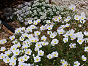

This week's featured flower is the white iris. This flower is white. It's an iris. You can trust me to tell the truth about that.
It grows in the ground. It blooms in the spring. It's known as a spring bulb. It grows from a bulb and the bulbs multiply and if you aren't careful you'll have a whole field full of iris after a few years, because these bulbs are busy being prolific down there in the dark.
Don't forget to cut some and take them inside because they smell really nice and they don't make you sneeze all that much.
All the latest flower news goes here. If the site had a blog, it would link to the latest blog entry here. But there isn't a blog so this section is kind of pointless.
Now's the time to order those daffodil bulbs from Burpee! Or maybe just look at some random flower pictures on the Internet instead.
